Operating Documentation
Direction 5133315-3, Rev# 14
Signa EXCITE HD 1.5T Service Methods
Module Version 2.0, Version Date 3/4/08
Operating Documentation |
| Required Persons | Preliminary Reqs | Procedure | Finalization |
|---|---|---|---|
| 1 |
| Item | Qty | Effectivity | Part# | Manufacturer | |
|---|---|---|---|---|---|
| Small Screwdriver | 1 | - | - | - | |
Removal of Old Microphone
Lock out and tag out circuit breaker MR1 A14 CB6 at rear of RF/Pen Cabinet (MR1) on magnet enclosure power supply (MEPS) module.
For RF/Pen II and RF/PDU Cabinet: Lock out and tag out circuit breaker MR1 A20 CB4 at rear of RF/Pen II and RF/PDU Cabinet on System Support Module (SSM).
(Refer to PHOENIX PDU with Plastic breaker Cover- Sub-System Lockout.)
Verify that voltage between MR1 A14 TP1 (+) and TP14 (–) is 0 Vdc.
For RF/Pen II and RF/PDU Cabinet, Verify voltage between MR1 A20 TP1 (+) (Dock) and TP14 (–) (Dock RTN) is 0 Vdc.
Removal of Rear Microphone
| NOTE: | If system has a Twinspeed cover, start at Step 3 for removal of front microphone. |
Refer to procedure for Rear End Bell Removal.
Remove (3) three screws holding speaker/microphone assembly in place. See Illustration 1.
Illustration 1: REAR VIEW OF MAGNET
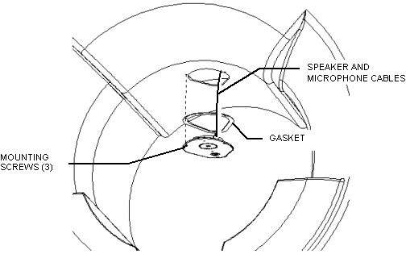
Drop speaker/microphone assembly down and remove microphone from plate. See Illustration 2.
Illustration 2: SPEAKER/MICROPHONE ASSEMBLY DETAIL
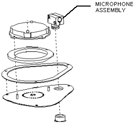
Remove microphone clamp by removing (2) two screws. See Illustration 3.
Lift Microphone and cable out of End Bell assembly paying careful attention to cable routing. See Illustration 3.
Illustration 3: MICROPHONE REMOVAL
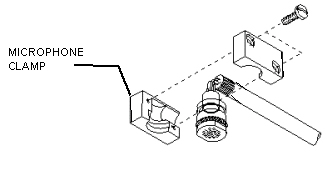
Locate and disconnect microphone cable on intercom board J7 or J9, located on the right side of the rear pedestal facing the magnet from the rear.
Removal of Front Microphone
Remove front end bell. Refer to Front End Bell Removal.
Pry plastic plug concealing front microphone with a flat blade screwdriver. See Illustration 4.
Illustration 4: FRONT END BELL
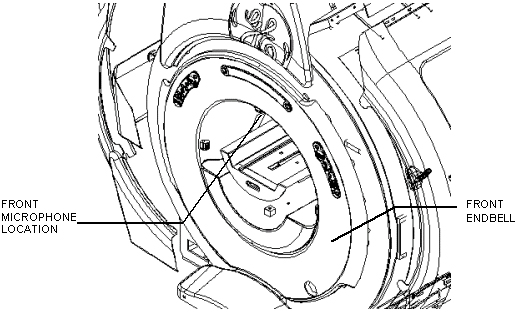
Remove teflon tape and thermal blanket to access microphone
Lift microphone from end bell. Skip to Step 3.h
Remove front cover.
Carefully, using a small screwdriver, pry the Operator Display away from the front cover (see Illustration 5).
Illustration 5: Operator Display Removal
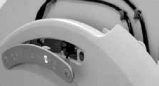
Disconnect Run 1261 from J4 on back of Operator Display.
Re-install Operator Display.
Remove the M10 Locking Nuts and Nylon Washers from the mounting studs located on the magnet (see Illustration 6).
Illustration 6: Front Cover Removal
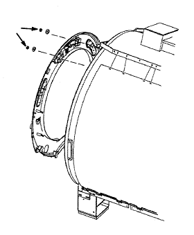
Remove the microphone from the hole in the front cover (seeIllustration 7 for microphone location).
Illustration 7: Front Microphone Location
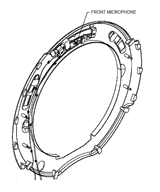
If the system has the old microphone (shown in Illustration 3), remove plastic plug from the hole in the front cover.
Disconnect other end of microphone cable at J7 or J9 at the intercom box located at the rear pedestal.
Installation of New Rear Microphone
Re-assemble microphone mount and re-install in speaker/microphone plate.
Connect other end of cable to intercom box J7 or J9 on rear pedestal.
Install speaker/microphone plate using (3) three screws removed in Removal of Old Microphones , Step 2.a.
Remove lock out tag out. turn on RF/PEN circuit breaker.
Installation of New Front Microphone
| NOTE: | If system has a Twinspeed cover, start at Step 2.f for installation of new front microphone. |
Place new microphone in end bell and re-tape thermal blanket with tape provided with new microphone.
Re-tywrap microphone cable to end bell.
Replace front end bell.
Push in plastic plug removed in Removal of Old Microphones , Step 3.a.
Connect other end of cable to intercom box J7 or J9. Skip to Step 2.k.
| NOTE: | Part 5248328, will be available to order after FW50 of 2007. |
The replacement microphone 5248328 for Twin covers has two overmolded pieces attached by a short cable: Microphone nose and Preamp overmold (see Illustration 8).
Illustration 8: Overmolded Front Microphone Assembly
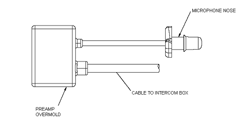
Push microphone nose into the hole in the cover until the flange snaps through. Do not pull the nose from the finished side of the cover. On the inside of the cover, align the curve of the microphone overmold with the curved surface of the cover (see Illustration 9).
| NOTE: | If excess epoxy prevents the nose of the microphone from completely snapping through the cover, remove any excess epoxy around the hole using necessary means. |
Illustration 9: Installing Front Microphone Nose

Clean the inside surface of the cover to the right of the microphone hole. Remove the tape backing on the Preamp overmold. Apply the Preamp overmold to the cover in the approximate location shown in Illustration 10.
Illustration 10: Location of Preamp Overmold
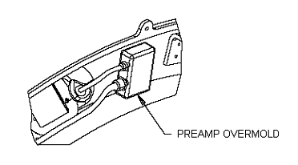
Replace the front cover. See Illustration 11.
Hang the Front Cover on the mounting studs.
Illustration 11: Front Cover Installation
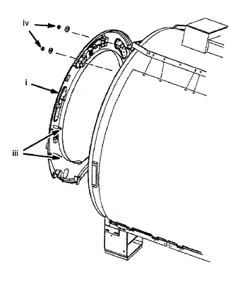
Adjust the locating nuts on the magnet to set the face of the Front Cover 12mm (1/2 inch) beyond the Front End Bell surface.
Set the standoff screws on the back of the Front Cover for the same 12mm (1/2 inch) depth. Tighten the lock nuts.
Put the Nylon Washers and M10 Locking Nuts retained from Front Cover Removal on the mounting studs and tighten.
Carefully, using a small screwdriver, pry the Operator Display away from the front cover (see Illustration 5).
Connect Run 1261 to J4 on back of Operator Display.
Re-install Operator Display.
Connect other end of microphone cable at J9 at the intercom box located at the rear pedestal.
| NOTE: | Front microphone assembly 5248328 requires the Remote Intercom2 Board 5250136 in the intercom box at the rear pedestal, which is included in Front Microphone Upgrade kit 5261060. Make sure that the system has this board in the intercom box before installation. If not, refer to Step 2.j.i- Step 2.j.v below for instructions. |
Lift and remove rear pedestal side covers.
Disconnect all cables attached to the Patient Communication Box.
iii. Remove 2 Hexagon screws and washers from the fiberglass bar attaching the Patient Communication Box to the rear pedestal (see Step ).
Illustration 12: Patient Communication Box Replacement
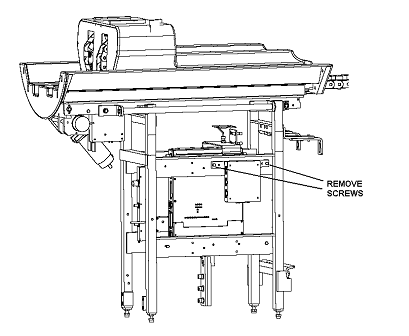
Install new Patient Communication Box 5162318, securing with 2 screws and washers retained from Removal of Old Microphones , Step 3.e.iv. Reattach all cables.
Replace rear pedestal side covers.
Remove Lock out/Tag out from circuit breaker MR1 A14 CB6 or MR1 A20 CB4.
Restore power to operator button panel and display assemblies by switching on circuit breaker MR1 A14 CB6 at rear of RF/Pen Cabinet (MR1) on MEPS module.
RF/Pen II and RF/PDU Cabinet: Switch on circuit breaker MR1 A20 CB4 on the SSM at rear of RF/Pen II Cabinet or RF/PDU.
No finalization steps.